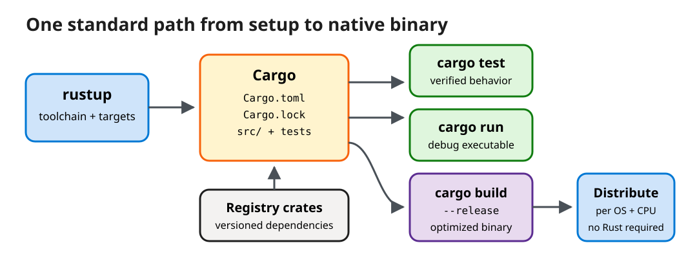

From Toolchain to Distributable Binary
Install stable Rust on Windows or macOS, run the generated Hello World, then grow it into a tested CLI with one managed dependency and a release build.
Starting state: no project exists yet; Part 2 creates one. Working directory: any parent folder you choose, written below as path/to — replace that placeholder with your actual folder (for example ~/dev); it is not a literal folder to create. Default file: once cargo new rust-greeter runs, every unqualified code snippet in this lesson targets src/main.rs inside the new rust-greeter package, and each pass below states whether it replaces that file's contents or adds to them.
30-minute core path
| Time | Activity |
|---|---|
| 5 min | Install and verify Rust on Windows or macOS |
| 6 min | Create and run the generated Hello World turn by turn |
| 4 min | Map C++ instincts to Rust and inspect a rejected dangling borrow |
| 10 min | Add a package and build rust-greeter in four explained passes |
| 3 min | Test, release-build, and choose a distribution path |
| 2 min | Knowledge check and recap |
Part 1: install the toolchain
rustup manages Rust toolchains and targets. A default installation includes rustc, the compiler; cargo, the build and package tool; and the standard library. Follow one host path.
- Open the official Install Rust page and download
rustup-init.exe. - Run it and accept the default stable MSVC toolchain.
- If prompted, install Visual Studio Build Tools with Desktop development with C++; Rust's MSVC target needs the Windows linker and SDK.
- Close and reopen PowerShell or Windows Terminal.
- If needed, install Apple's linker tools:
xcode-select --install. - Run the official rustup installer in Terminal:
curl --proto '=https' --tlsv1.2 \
-sSf https://sh.rustup.rs | shAccept the default stable toolchain, then open a new Terminal.
Verify the same three commands on either host:
rustc --version
cargo --version
rustup show active-toolchainRestart the terminal first. Then confirm that %USERPROFILE%\.cargo\bin on Windows or $HOME/.cargo/bin on macOS is on PATH. Do not install a second copy from an unrelated package manager while diagnosing the first.
Part 2: Hello World, one turn at a time
-
YOU
Create a binary package
cd path/to cargo new rust-greeter cd rust-greeterpath/tois a placeholder for the parent folder you chose; replace it with your actual path (for example~/dev), not a folder named literallypath/to.cargo new rust-greetercreates the package:Cargo.tomlholds package metadata and dependencies, andsrc/main.rsis the executable entry point. Every command in the rest of this lesson runs from thisrust-greeterpackage root. -
CARGO
Inspect the minimal program Cargo generated
File:
src/main.rs—cargo newalready wrote this content for you; nothing to edit yet.fn main() { println!("Hello, world!"); }fndeclares a function,mainis the entry point, and the!inprintln!marks a macro invocation rather than a normal function call. -
YOU
Compile and run
cargo run -
CARGO
Report the build and program output
Compiling rust-greeter v0.1.0 Finished `dev` profile Running `target/debug/rust-greeter` Hello, world!The debug executable is under
target/debug/. Cargo reruns only the work invalidated by later changes. -
YOU
Make the first edit
File:
src/main.rs— replace the entire generated contents with:fn main() { let audience = "C++ engineer"; println!("Hello, {audience}!"); }letintroduces an immutable binding by default. The format capture is checked by the compiler. -
CARGO
Rebuild and run the changed program
cargo run # Hello, C++ engineer!
println! end in !?
A function receives already-formed values through a fixed parameter list. A macro receives Rust syntax tokens and expands them into Rust code before that generated code is type-checked. The ! tells you that function-like macro expansion is happening; it is not logical negation and does not mean “dangerous.”
println! uses this ability to accept a varying number and mix of arguments and to check a literal format string against them during compilation. This would be awkward to express as one ordinary Rust function.
| Syntax | What it is | How to read it |
|---|---|---|
greeting("Ada") | Function call | Evaluate the argument, then call a function with a declared signature. |
println!("Hi, {name}") | Function-like macro invocation | Expand the supplied tokens into code, then compile and type-check that code. |
format!, assert_eq!, vec! | Other common function-like macros | The trailing ! is the visual cue that each can generate syntax rather than merely receive values. |
#[derive(Parser)] | Attribute-style procedural macro | Macros can also use attribute syntax, so not every macro invocation ends in !. |

Download the editable Excalidraw source.
Part 3: translate your C++ mental model
| C++ concept | Closest Rust concept | Important difference |
|---|---|---|
const local | let | Bindings are immutable unless declared mut. |
| RAII destructor | Drop at end of ownership scope | Moves are tracked and moved-from values cannot be reused. |
T& / const T& | &mut T / &T | Borrow rules prevent conflicting aliases while a reference is live. |
| Templates plus concepts | Generics plus trait bounds | Traits also define shared behavior and support dynamic dispatch. |
| CMake + package manager + test runner | Cargo | One project manifest drives the standard workflow. |
Consider a realistic view-lifetime bug. C++ can compile a std::string_view that outlives the string it views:
std::string_view label() {
std::string s = "release";
return s; // view survives s
}fn label() -> &str {
let s = String::from("release");
&s
}The Rust compiler rejects the return because the borrowed value is dropped at the end of label. Safe Rust turns this memory-safety review concern into a compile-time obligation. Rust does not eliminate logic bugs, deadlocks, resource exhaustion, or unsafe-code defects.
Part 4: add a package and build a useful CLI
A crate is a Rust compilation unit; a package is the Cargo project described by Cargo.toml and may contain one or more crates. Run this from the rust-greeter package root to add the maintained clap crate for command-line parsing:
cargo add clap --features deriveFile: Cargo.toml — this command edits the [dependencies] section for you; do not hand-edit that section. Cargo writes a compatible dependency requirement to Cargo.toml and resolves exact transitive versions into Cargo.lock. The Cargo guide recommends checking the lockfile into version control for an executable so collaborators resolve the same dependency set.
Build src/main.rs in four passes rather than treating the finished program as one block of unfamiliar syntax. No further Cargo.toml edits are needed for the rest of this lesson.
Pass 1: describe the command line as data
File: src/main.rs — add above fn main:
use clap::Parser;
#[derive(Parser)]
#[command(version, about = "A small Rust greeting CLI")]
struct Args {
#[arg(short, long, default_value = "world")]
name: String,
#[arg(short, long, default_value_t = 1)]
count: u8,
}| Rust syntax | Meaning for a C++ programmer |
|---|---|
use clap::Parser; | Brings the Parser name into scope. Unlike #include, it does not paste a header's text into this file. |
#[derive(Parser)] | An attribute asks clap to generate the repetitive argument-parsing implementation for Args at compile time. |
#[command(...)] | Metadata for the whole CLI. version and about become generated --version and --help output. |
#[arg(...)] | Metadata for one field. short creates -n or -c; long creates --name or --count. |
String and u8 | String owns growable UTF-8 text. u8 is an unsigned 8-bit integer, sufficient for this deliberately small repeat count. |
derive saves you from writing
The generated parser reads process arguments, validates their shapes, converts --count to u8, applies defaults, and builds an Args value. It also generates help and version output. This is library-generated Rust code, not runtime reflection.
Pass 2: write a function with an explicit ownership contract
File: src/main.rs — add below the Args struct, still above fn main:
fn greeting(name: &str) -> String {
format!("Hello, {name}!")
}| Rust syntax | Meaning |
|---|---|
fn greeting | Declares a function. Parameter and return types follow the names rather than preceding them. |
name: &str | A read-only borrowed string slice. The function may inspect the text but does not own or free the caller's allocation. |
-> String | The function returns a new owned string. Ownership of that result moves to the caller. |
format!(...) | A macro, recognizable by !, that builds a String. The final expression has no semicolon, so its value is returned—similar to writing return ...; in C++. |
Pass 3: parse, borrow, and loop
File: src/main.rs — replace the existing fn main (from “Make the first edit” above) with:
fn main() {
let args = Args::parse();
for _ in 0..args.count {
println!("{}", greeting(&args.name));
}
}| Rust syntax | Meaning |
|---|---|
Args::parse() | An associated function supplied by the generated Parser implementation. It returns a fully typed Args value or exits with a useful CLI error. |
let args | Creates an immutable local binding. Rust infers its type as Args. |
0..args.count | A half-open range: zero through count - 1. The underscore means the loop index is intentionally unused. |
&args.name | Temporarily borrows the owned String. Rust automatically views &String as the &str expected by greeting. |
println!(...) | Another macro. The compiler checks that formatting placeholders and supplied values agree. |
Pass 4: keep the smallest behavior under test
File: src/main.rs — add at the end of the file, after fn main:
#[cfg(test)]
mod tests {
use super::*;
#[test]
fn formats_a_borrowed_name() {
assert_eq!(greeting("C++ engineer"), "Hello, C++ engineer!");
}
}| Rust syntax | Meaning |
|---|---|
#[cfg(test)] | Compiles this module only for test builds, so test code is absent from the release executable. |
mod tests | Creates a nested module. Braces define the module inline; no separate project or test executable is required. |
use super::*; | Imports names from the parent module, including the private greeting function. |
#[test] | Registers the following zero-argument function with Rust's built-in test harness. |
assert_eq! | Compares two values and reports both sides on failure. |
Active exercise: verify the CLI workflow
Run each command from the rust-greeter package root, deliberately change the expected greeting once to observe a test failure, restore it, and inspect what Cargo standardizes:
cargo fmt --check
cargo test
cargo run -- --name "C++ engineer" --count 2Expected evidence: cargo fmt --check prints nothing (already formatted); cargo test reports test result: ok. 1 passed; cargo run -- ... prints Hello, C++ engineer! twice. The first -- belongs to Cargo: it ends Cargo's options. Everything after it is passed to rust-greeter, where clap interprets --name and --count.
greeting accepts &str, so it can read a string slice without taking ownership or copying the caller's String. Lesson 5 makes that contract central.
Part 5: release and distribute
Run these from the same rust-greeter package root:
cargo build --release
# macOS
./target/release/rust-greeter --name Ferris
# Windows PowerShell
.\target\release\rust-greeter.exe --name FerrisThe optimized, target-specific binary is under target/release/. A recipient does not need the Rust toolchain to run it, but you must build for the recipient's operating system and CPU and account for any linked native libraries.
| Audience | Distribution path | Use when |
|---|---|---|
| Teammate on the same target | Copy the release executable plus license/readme. | You control the target and do not need an installer. |
| Rust developer | cargo install --path . | They have Cargo and want the binary on Cargo's bin path. |
| Public crate users | Publish to crates.io, then cargo install rust-greeter. | The package is public and meets crates.io metadata and ownership requirements. |
| General desktop users | Platform package, signed installer, or managed software channel. | You need signing, updates, shortcuts, or policy integration; this is outside the course. |
Optional videos
These videos are optional and excluded from the 30-minute core path.
Install the tools to develop with Rust [4 of 35]
Microsoft Developer (Microsoft Learn). Reinforces rustup and editor setup.
Create your first application [5 of 35]
Microsoft Developer (Microsoft Learn). Demonstrates the first Hello World workflow.
Text alternatives
- Instead of the installation video, read Installation in The Rust Programming Language.
- Instead of the first-application video, read Hello, World! and Hello, Cargo!.
Knowledge check
1. Which file declares the direct dependency, and which file records the resolved versions?
Answer: Cargo.toml declares the dependency requirement; Cargo.lock records exact resolved versions for a reproducible application build.
2. Why does greeting take &str instead of String?
Answer: It only needs to read the name. Borrowing accepts string slices without transferring ownership or forcing a copy.
3. Is target/release/rust-greeter portable to every host?
Answer: No. It is native code for a particular target. Build for each supported OS/architecture and package any required native dependencies.
Recap
You installed one managed toolchain, generated a conventional package, ran Hello World, added a versioned dependency, wrote a borrowed API and test, and produced a release binary. The key shift from C++ is not syntax: Cargo supplies a common project workflow, while safe Rust asks the compiler to prove ownership and borrowing constraints.
Sources
- Install Rust, Rust Project. Official rustup installation entry point. Accessed September 16, 2026.
- Installation, The Rust Programming Language, Rust Project. Windows and macOS prerequisites and rustup workflow. Accessed September 16, 2026.
- Hello, Cargo!, The Rust Programming Language, Rust Project. Package creation, build, run, and release profiles. Accessed September 16, 2026.
- Functions, The Rust Programming Language, Rust Project. Parameters, return types, expressions, and statements. Accessed September 17, 2026.
- cargo add, The Cargo Book, Rust Project. Dependency updates and feature selection. Accessed September 16, 2026.
- clap Derive Tutorial, clap project documentation. Struct and field attributes for declarative argument parsing. Accessed September 17, 2026.
- Cargo.toml vs Cargo.lock, The Cargo Book, Rust Project. Manifest and lockfile roles for reproducible application builds. Accessed September 16, 2026.
- cargo install, The Cargo Book, Rust Project. Binary crate installation from a path, Git, or a registry. Accessed September 16, 2026.
- Publishing a Crate to Crates.io, The Rust Programming Language, Rust Project. Package metadata and registry publishing. Accessed September 16, 2026.
- Understanding Ownership, The Rust Programming Language, Rust Project. Moves, borrowing, and compile-time memory safety. Accessed September 16, 2026.
- How to Write Tests, The Rust Programming Language, Rust Project. Test attributes, assertions, and the built-in test harness. Accessed September 17, 2026.
- Macros, The Rust Programming Language, Rust Project. Function-like, derive, and attribute-style macros. Accessed September 17, 2026.
- Install the tools to develop with Rust [4 of 35], Microsoft Developer (Microsoft Learn), 4:34. Accessed September 16, 2026.
- Create your first application [5 of 35], Microsoft Developer (Microsoft Learn), 4:44. Accessed September 16, 2026.